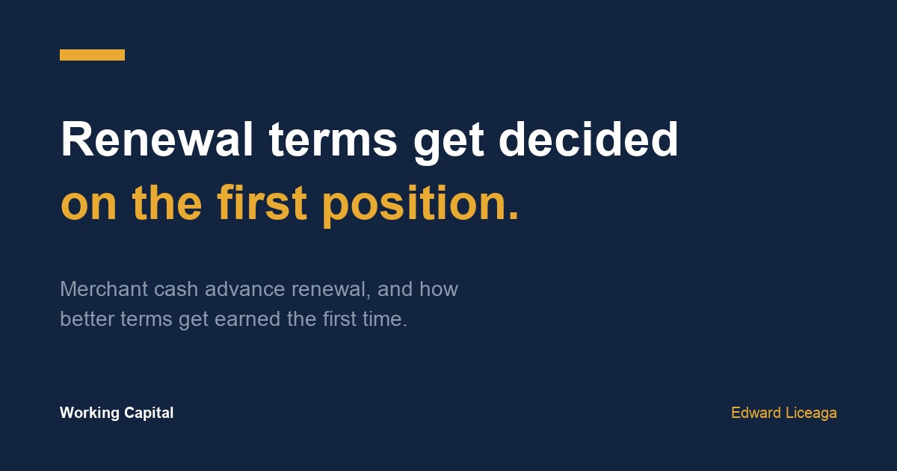

Merchant Cash Advance Renewal: How Better Terms Get Earned on the First Position
Renewal terms get decided while the first advance is still running, by a record you are writing every week.

Most owners start thinking about a merchant cash advance renewal when the first advance is nearly paid, or when cash gets tight again. By then the terms of that renewal are mostly settled. They were set over the previous months by how the first position ran, one weekly debit at a time.
About sixty percent of my business is repeat and renewal, a number I wrote about in what a thousand closings taught me. Renewals are where the pricing conversation changes, because the funder is no longer guessing about you, and that works against a weak record as much as it rewards a clean one.
What a renewal actually pays out
A renewal is a new advance. Part of it goes to close out what you still owe on the current one, and you receive the difference, less any fees.
Here is an example with round numbers, not an offer. Say a renewal is approved at $40,000 and you still owe $12,000 on the first position. About $12,000 goes to pay that off. Roughly $28,000 lands in your account. The new payback is priced on the full $40,000, so part of what you pay for is money that never reached you.
That is the first number to know before you compare anything: the net. Two renewal offers with the same headline can put very different amounts in your account, and a renewal can look larger than a second advance from somewhere else while delivering less. If factor rates still feel abstract, this piece on factor rate versus interest rate walks through the cost side.
Also ask whether the remaining balance gets any discount when it is paid off early. Some agreements include one and many do not. It is written in the contract either way, and it changes the net.
What a funder reads before offering a renewal
On a first file, underwriting reads three months of statements cold. On a renewal it has something better, which is how you actually handled a fixed payment. It looks at whether the debits cleared on schedule, whether any came back returned, and whether the balance dipped negative on the days they hit.
Revenue during the term matters too, whether it held steady, grew, or slid. A business that took capital and then shrank is a different file than one that took capital and grew into it.
Then it checks whether you added anything. A new position from another funder partway through the term shows up as a second recurring debit, and it tells the funder the first one was not enough, or that the cash went somewhere other than the stated use. It is one of the first lines checked, the same way it is on a first file, which I covered in what underwriters look for in bank statements.
It also reads, less formally, how you communicated. An owner who called ahead of a slow week and worked out a plan reads very differently from one whose payments bounced with no contact.
How better terms get earned
A clean record replaces risk the funder had to price in the first time. That is why a merchant cash advance renewal on better terms is possible. Better can mean a lower factor rate, a longer term, a lighter payment, or a larger amount, and on a strong record it sometimes means more than one of those. None of it is automatic, and every renewal is still a new decision, subject to approval.
The owners who get the best second terms usually made one choice on the first file. They took the amount their use of funds justified, even when more was offered. A smaller first payment is easier to carry through a slow month, and a slow month with every debit cleared builds more of a record than a big month does. The weekly test for that sizing is in how much funding can my business get.
What damages a renewal
Stacking is the most common one. A second position from a different funder puts two fixed debits against the same deposits, and the renewal conversation that follows is about how to consolidate, which is a weaker place to negotiate from.
Returned payments are next. Even a few, without an explanation on file, change the read of an otherwise good term.
Then there is the renewal taken to cover the payment on the current advance. If the only use for the net is making next week's debits, the underlying problem is still there, and a larger balance will not fix it. I would rather tell an owner that than renew them, because the next renewal after that one is where things break.
Questions to ask on day one
You have the most say over your renewal before the first advance funds. Ask these while you are still reviewing the first offer.
When does this become eligible for a renewal review, and what share of the balance needs to be paid by then? The threshold varies by funder, so get their number.
Is there an early payoff discount on the remaining balance if I renew or pay off early?
What would you want to see in the payment record to improve the terms next time?
Write the answers down with the date. When renewal time comes, you will be comparing against what they told you, and you will know your net before anyone quotes a headline.
The short version
A merchant cash advance renewal on better terms starts on the first file. Size it to what the money has to do, keep every debit clean, add nothing mid term, and call before a slow week instead of after it. Then compare renewals by what lands in your account.
If you are planning a first advance with the second one in mind, the application is one page and three months of statements: https://ccapsolution.com/apply/?agent=edward.liceaga
May qualify, subject to approval. Every renewal is a new underwriting decision, and terms, amounts, and timing vary by file. The figures above are an illustrative example, not a client file or an offer. A merchant cash advance is the purchase of future receivables, not a loan. I am an independent funding partner and earn on funded referrals.